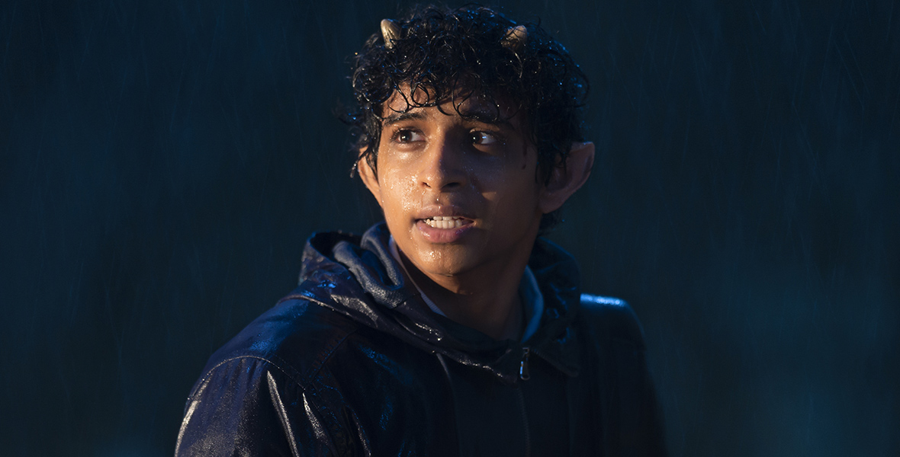
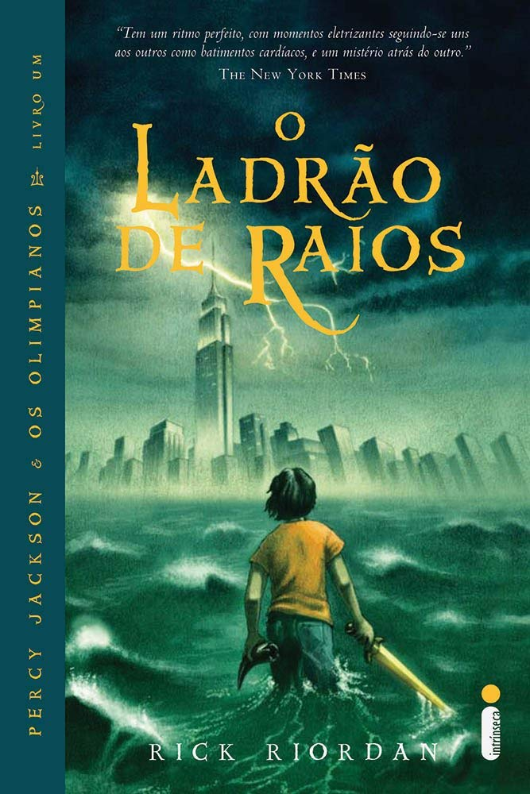
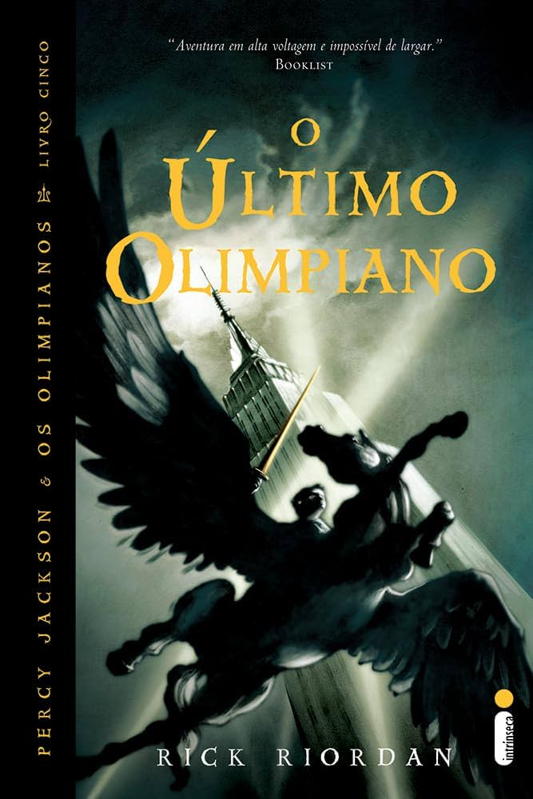

Sobre
Percy Jackson é um garoto de 12 anos que descobre ser filho de Posêidon, deus dos mares. A partir disso, ele entra em um mundo secreto onde os deuses do Olimpo vivem no mundo moderno e seus filhos — os semideuses — treinam no Acampamento Meio-Sangue, em Nova York. Junto com sua amiga Annabeth Chase e o sátiro Grover, Percy embarca em missões perigosas para impedir guerras entre os deuses e salvar o mundo.
Personagens
 Percy Jackson
filho de Posêidon, herói principal
Percy Jackson
filho de Posêidon, herói principal

Grover Underwood sátiro, melhor amigo de PercyLivros




Curiosidades
A origem de Percy Jackson
Rick Riordan criou Percy Jackson em 1994 para contar histórias de ninar para seu filho Haley, que tinha dislexia e TDAH. Para tornar seu filho o herói da história, ele deu as mesmas condições ao Percy — e transformou esses "defeitos" em superpoderes de semideus. O que começou como uma história improvisada virou uma série que conquistou milhões de leitores no mundo todo.
Sabia?
- Annabeth foi baseada em uma colega de classe do filho de Riordan
- Nico di Angelo não estava planejado para ter um papel tão grande na série
- Luke Castellan era para ser apenas um vilão simples mas ganhou profundidade